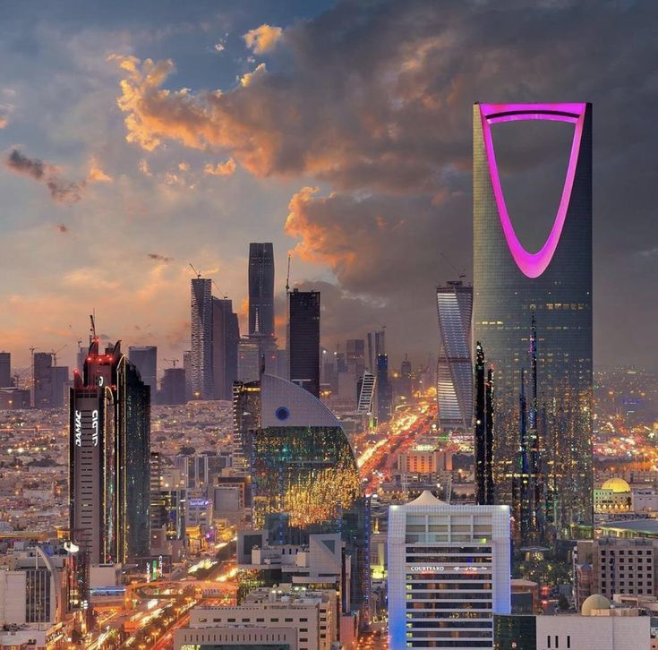

Saudi Arabia Tourism.
Saudi Arabia, a land of historical depth and cultural richness, offers an intriguing mix of traditional and modern attractions. From the ancient rock carvings of Al-Ula and the bustling streets of Riyadh to the spiritual cities of Mecca and Medina, the kingdom invites exploration. Jeddah's coastline and Taif's mountainous landscapes provide scenic beauty, while the futuristic city of NEOM symbolizes the country's vision for the future. Saudi Arabia's diverse landscapes, from deserts to seas, complement its heritage sites, making it a unique travel destination.

Riyadh, the capital city.
Riyadh, the capital city, is a dynamic metropolis blending modernity with heritage. The city is known for its skyscrapers, including the iconic Kingdom Centre, alongside historical sites like the Masmak Fortress and the bustling traditional markets. Riyadh's museums, parks, and business centers reflect the kingdom's rapid development and its role as a cultural and economic hub.

Jeddah, located on Saudi Arabia's western coast, is a historic city known as the "Gateway to Mecca." It blends a rich heritage with modern urban life, offering a unique experience with its Red Sea waterfront, bustling markets, and diverse population. Click here for more info on jeddah!

Mecca is the spiritual heart of the Islamic world, home to the Holy Kaaba in the Masjid al-Haram, Islam's holiest site. Pilgrims from around the globe perform the Hajj, an annual pilgrimage required of Muslims. The city's religious significance and rich history make it a pivotal destination, offering insights into Islamic traditions and the profound sense of unity among the faithful.
Medina Tourism
Medina, revered as the Prophet Muhammad's final resting place, holds immense religious importance. Al-Masjid an-Nabawi, the Prophet's Mosque, stands as a monumental site for visitors. The city's tranquil ambiance, historical mosques, and the sacred Uhud Mountain offer a profound spiritual experience, drawing millions of pilgrims and visitors seeking peace and reflection.
Taif Tourism
Taif, known as the "City of Roses," is a popular tourist destination in Saudi Arabia, celebrated for its pleasant climate, lush landscapes, and rich cultural heritage. Nestled in the mountains, it offers a respite from the desert heat, attracting visitors with its beautiful parks, gardens, and traditional markets. Key attractions include the Al-Hada Mountain for its stunning views and cable car rides, the Shubra Palace showcasing Islamic and Hejazi architecture, and the vibrant Souq Okaz for cultural experiences. Taif's rose farms and the annual Rose Festival highlight its agricultural significance and traditional rosewater distillation practices.